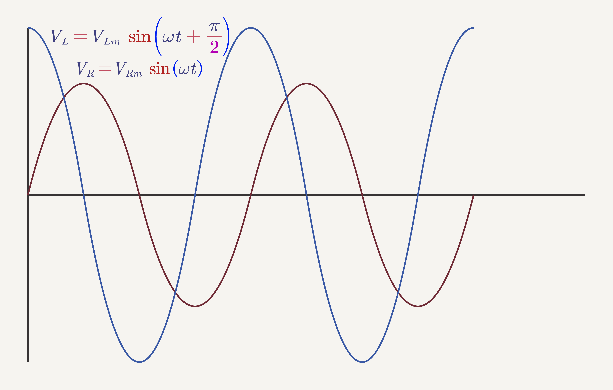
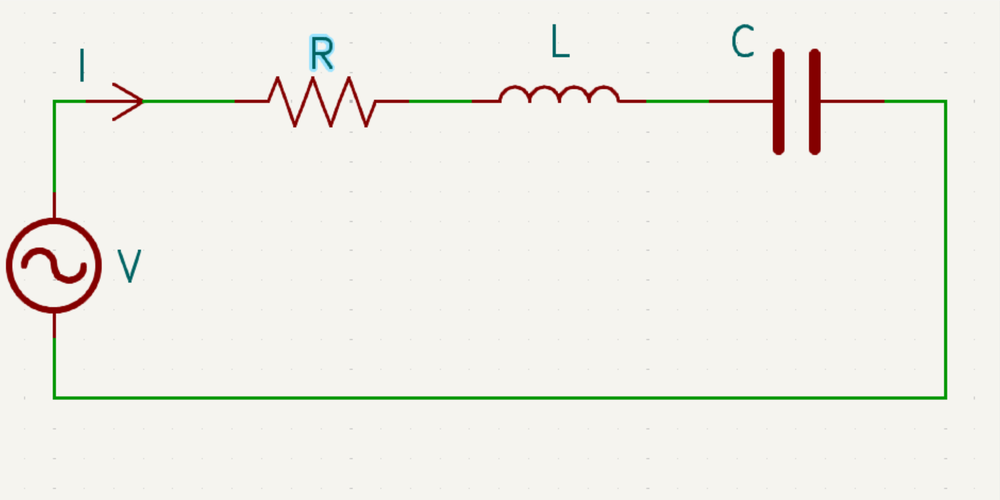

# Rangkaian Listrik Arus Bolak-balik --- - Sumber Tegangan dan Arus Bolak-balik - Tegangan dan Arus Efektif - Hambatan Murni, Induktor dan Kapasitor dalam Rangkaian Arus AC - Rangkaian seri R-L, R-C, L-C dalam Rangkaian Arus AC - Rangkaian seri R-L-C dalam Rangkaian Arus AC --- ### Sumber Tegangan dan Arus Bolak-balik - Pada dasarnya sumber tegangan listrik terdiri dari dua bagian penting yaitu *stator* dan *rotor* (yang bergerak). Dua bagian ini adalah magnet tetap dan kumparan. Ada generator dengan sistem magnet sebagai stator dan kumparan sebagai rotor. Tetapi ada juga generator dengan sistem kumparan sebagai stator dan magnet sebagai rotor. --- <img src="../resources/images/ac01.jpg" height="100%"> --- - Menurut Michael Faraday, jika sebuah kumparan melingkupi sejumlah garis gaya magnet dan jumlah garis gaya magnet berubah akan menghasilkan tegangan listrik induksi(ε<sub>ind</sub>). Jika sejumlah lilitan (N) dan jumlah garis gaya (Φ) berubah-ubah, maka: ###### $$\displaystyle {\mathcal {E}}=-N{\frac {\mathrm {d} \Phi _{B}}{\mathrm {d} t}}$$ --- - Jika kumparan diputar dengan kecepatan sudut *ω*, akan dihasilkan ggl induksi sebesar: ###### $$\displaystyle {\mathcal {E}}=-NBA{\frac {\mathrm {d}}{\mathrm {d} t}}\cos{\omega t}=NBA\omega\sin{\omega t}$$ $$\displaystyle {\mathcal {E}_{maks}}=NBA\omega$$ $$\displaystyle {\mathcal {E}}=\displaystyle {\mathcal {E}\_{maks}}\sin{\omega t}$$ - Persamaan di atas jelas menunjukkan bahwa GGL arus bolak-balik berubah secara sinusoidal. Suatu sifat yang menjadi ciri khas arus bolak-balik. --- <a href="https://phet.colorado.edu/sims/html/circuit-construction-kit-ac/latest/circuit-construction-kit-ac_all.html"><img src="../resources/images/ac02.png" height="100%"></a> --- #### Tegangan dan Arus Efektif - Tegangan listrik di rumah kita adalah teganagan bolak-balik yang besarnya 220V. Kalau kita ukur dengan multimeter AC ternyata cocok menunjuk angka 220 V. - Apakah ini tegangan maksimum seperti kita bicarakan di atas? - Tegangan 220 V yang terukur dengan multi meter bukan tegangan maksimum melainkan tegangan efektif. Tegangan efektif adalah tegangan tetap pada tegangan bolak-balik yang memberi efek panas sama bila diganti dengan tegangan searah (DC) untuk waktu yang sama. --- ###### $$V_{ef}=\sqrt{\frac{{V_{maks}}^2}{2}}=\frac{V_{maks}}{\sqrt{2}}$$ ###### $$I_{ef}=\sqrt{\frac{{I_{maks}}^2 }{2}}=\frac{I_{maks}}{\sqrt{2}}$$ Keterangan: - *V<sub>ef</sub>* = Tegangan efektif (V) - *V<sub>maks</sub>* = Tegangan maksimum (V) - *I<sub>ef</sub>* = Arus efektif (A) - *I<sub>maks</sub>* = Arus maksimum (A) --- #### 1. Hambatan Murni dalam Rangkaian Arus AC (Bolak-balik) --- - Misalkan Arus yang mengalir ###### $$I=I_{m}\sin{\omega t}$$ - dalam rangkaian ini berlaku hukum Ohm $$V=IR$$ $$V=I_{m}R\sin{\omega t}$$ $$V_{m}=I_{m}R$$ --- ###### $$V=V_{m}\sin{\omega t}$$ - Dalam hal ini sudut fase pada *I* dan *V* sama yaitu (ωt) --- --- #### 2. Induktor dalam Rangkaian Arus AC (Bolak-balik) --- - Misalkan Arus yang mengalir $$I=I_{m}\sin{\omega t}$$ - Menurut Joseph Henry, bila arus pada induktor mengalami perubahan, akan terjadi tegangan induksi: $$\displaystyle {\mathcal {E}}=-L{\frac {\mathrm {d}I}{\mathrm {d} t}}$$ --- - Rangkaian ini merupakan rangkaian tertutup, sehingga berlaku **Hukum Kirchoff II** $$\Sigma\displaystyle {\mathcal {E}}+\Sigma IR=0$$ $$IR+\displaystyle {\mathcal {E}}\_{sumber}+\displaystyle {\mathcal {E}}_{ind}=0$$ - karena R pada induktor = 0, $$I(0)+V+-L{\frac {\mathrm {d}I}{\mathrm {d} t}}=0$$ --- $$V=L{\frac {\mathrm {d}I}{\mathrm {d} t}}$$ $$V=L{\frac {\mathrm {d}}{\mathrm {d} t}}I_{m}\sin{\omega t}$$ $$V=\omega L I_{m}\cos{\omega t}$$ ###### $$V=\omega L I_{m}\sin\Big({\omega t+\frac{\pi}{2}}\Big)$$ --- ###### $$V=\omega L I_{m}\sin\Big({\omega t+\frac{\pi}{2}}\Big)$$ Keterangan: - *X<sub>L</sub>* = reaktansi induktif (Ω), besarnya = *2πfL* atau *ωL* - *ω* = kecepatan sudut (rad/s) - *L* = Induktansi diri (H) - *I<sub>m</sub>* = Arus maksimum (A) pada Induktor --- Jadi, dapat ditulis pula ###### $$V=V_{m}\sin\Big({\omega t+\frac{\pi}{2}}\Big)$$ ###### $$V=I_{m}X_L\sin\Big({\omega t+\frac{\pi}{2}}\Big)$$ - *V* = tegangan sesaat pada induktor - *V<sub>m</sub>* = tegangan maksimum pada induktor --- - Ternyata sudut fase tegangan lebih besar *$\frac{\pi}{2}$ rad* dari pada sudut fase arus atau boleh dikatakan bahwa pada rangkaian induktor, tegangan mendahului *$\frac{\pi}{2}$ rad* dari pada arus. - Grafik tegangan terhadap arus dapat kita lihat seperti gambar di bawah. - Terlihat pada saat *I = 0*, *V* sudah mencapai maksimum dan jika *I* maksimum, maka *V* sudah mencapai 0 dan seterusnya. --- --- - Tampak bahwa sudut fase *V* selalu lebih besar *$\frac{\pi}{2}$ rad* dari sudut fase arus. Dalam penulisan bila: $$I=I_{m}\sin{\omega t}$$ $$V=V_{m}\sin\Big({\omega t+\frac{\pi}{2}}\Big)$$ - Sebaliknya bila penulisannya $$V=V_{m}\sin{\omega t}$$ $$I=I_{m}\sin\Big({\omega t-\frac{\pi}{2}}\Big)$$ --- #### 3. Kapasitor dalam Rangkaian Arus AC (Bolak-balik) --- - Misalkan Arus yang mengalir $$I=I_{m}\sin{\omega t}$$ - Selama *Δt* sekon, pada kapasitor terjadi penimbunan muatan sebesar: $$\Delta Q=I\Delta t$$ - karena $\Delta Q=C\Delta V$, maka $$C\Delta V=I\Delta t$$ --- $$\mathrm{d}V=\frac 1 C I\ \mathrm{d}t$$ $$V=\frac 1 C \int I\ \mathrm{d}t$$ $$V=\frac 1 C \int I_{m}\sin{\omega t}\ \mathrm{d}t$$ $$V=\frac {I_m}{C} \int \sin{\omega t}\ \mathrm{d}t$$ --- $$V=\frac {I_m}{C}\frac {1}{\omega} (-\cos{\omega t}) $$ $$V=\frac {1}{\omega C}I_m(-\cos{\omega t}) $$ ###### $$V=\frac {1}{\omega C} I_{m}\sin\Big({\omega t-\frac{\pi}{2}}\Big)$$ --- ###### $$V=\frac {1}{\omega C} I_{m}\sin\Big({\omega t-\frac{\pi}{2}}\Big)$$ Keterangan: - *X<sub>C</sub>* = reaktansi kapasitif (Ω), besarnya = *$\frac {1}{2\pi f C}$* atau *$\frac {1}{\omega C}$* - *ω* = kecepatan sudut (rad/s) - *C* = kapasitas kapasitor (F) - *I<sub>m</sub>* = Arus maksimum (A) pada Kapasitor --- Jadi, dapat ditulis pula ###### $$V=V_{m}\sin\Big({\omega t-\frac{\pi}{2}}\Big)$$ ###### $$V=I_{m}X_C\sin\Big({\omega t-\frac{\pi}{2}}\Big)$$ - *V* = tegangan sesaat pada Kapasitor - *V<sub>m</sub>* = tegangan maksimum pada Kapasitor --- - Ternyata sudut fase tegangan lebih kecil *$\frac{\pi}{2}$ rad* dari pada sudut fase arus atau boleh dikatakan bahwa pada rangkaian kapasitor, tegangan ketinggalan *$\frac{\pi}{2}$ rad* dari pada arus. - Grafik tegangan terhadap arus dapat kita lihat seperti gambar di bawah. - Terlihat pada saat *V = 0*, *I* sudah mencapai maksimum dan jika *V* maksimum, maka *I* sudah mencapai 0 dan seterusnya. --- --- - Tampak bahwa sudut fase *V* selalu lebih kecil *$\frac{\pi}{2}$ rad* dari sudut fase arus. Dalam penulisan bila: $$I=I_{m}\sin{\omega t}$$ $$V=V_{m}\sin\Big({\omega t-\frac{\pi}{2}}\Big)$$ - Sebaliknya bila penulisannya $$V=V_{m}\sin{\omega t}$$ $$I=I_{m}\sin\Big({\omega t+\frac{\pi}{2}}\Big)$$ --- #### 4. Rangkaian seri R-L dalam Rangkaian Arus AC (Bolak-balik) --- - Misalkan Arus yang mengalir $$I=I_{m}\sin{\omega t}$$ - *V<sub>R</sub>* dan *I* mempunyai fase yang sama $$V_R=V_{Rm}\sin{\omega t}$$ - *V<sub>L</sub>* dan *I* mempunyai beda fase *$\frac{\pi}{2}$ rad* dengan *V<sub>L</sub>* mendahului *I* $$V_L=V_{Lm}\sin\Big({\omega t+\frac{\pi}{2}}\Big)$$ --- - *V* merupakan hasil penjumlahan dari *V<sub>R</sub>* dan *V<sub>L</sub>* ###### $$\begin{split} V &=V_R+V_L\cr &=V_{Rm}\sin{\omega t}+V_{Lm}\sin\Big({\omega t+\frac{\pi}{2}}\Big) \end{split}$$ - Secara grafik, *V* didapatkan dari penjumlahan *V<sub>R</sub>* dan *V<sub>L</sub>* --- - Secara fase vektor (fasor), ${\displaystyle {\overrightarrow {V}=\overrightarrow {V_R}+\overrightarrow {V_L}}}$ - Besarnya, $V=\sqrt{{V_R}^2+{V_L}^2}$ - Besar tegangan maksimum adalah: ###### $$V_m=\sqrt{{V_{Rm}}^2+{V_{Lm}}^2}$$ $$I_m Z=\sqrt{{(I_{m}R)}^2+{(I_{m}X_L)}^2}$$ $$Z=\sqrt{{R}^2+{X_L}^2}$$ --- ###### $$V=\sqrt{{V_R}^2+{V_L}^2}$$ ###### $$V_m=\sqrt{{V_{Rm}}^2+{V_{Lm}}^2}$$ ###### $$Z=\sqrt{{R}^2+{X_L}^2}$$ Keterangan: - *X<sub>L</sub>* = reaktansi induktif (Ω) - *Z* = impedansi / hambatan total dalam rangkaian (Ω) ---  --- Pada grafik sudut fase *V* mendahului sudut fase *I* sebesar *φ* radian $$\theta_V=\theta_I+\varphi$$ $$V=V_{m}\sin({\omega t+\varphi})=I_m Z\sin({\omega t+\varphi})$$ dengan *φ* = beda sudut fase tegangan dan arus ###### $\tan{\varphi}=\frac{X_L}{R}$ ; $\cos{\varphi}=\frac{R}{Z}$ --- #### 5. Rangkaian seri R-C dalam Rangkaian Arus AC (Bolak-balik) --- - Misalkan Arus yang mengalir $$I=I_{m}\sin{\omega t}$$ - *V<sub>R</sub>* dan *I* mempunyai fase yang sama $$V_R=V_{Rm}\sin{\omega t}$$ - *V<sub>C</sub>* dan *I* mempunyai beda fase *$\frac{\pi}{2}$ rad* dengan *I* mendahului *V<sub>C</sub>* $$V_C=V_{Cm}\sin\Big({\omega t-\frac{\pi}{2}}\Big)$$ --- - *V* merupakan hasil penjumlahan dari *V<sub>R</sub>* dan *V<sub>C</sub>* ###### $$\begin{split} V &=V_R+V_C\cr &=V_{Rm}\sin{\omega t}+V_{Cm}\sin\Big({\omega t-\frac{\pi}{2}}\Big) \end{split}$$ - Secara grafik, *V* didapatkan dari penjumlahan *V<sub>R</sub>* dan *V<sub>C</sub>* --- - Secara fase vektor (fasor), ${\displaystyle {\overrightarrow {V}=\overrightarrow {V_R}+\overrightarrow {V_C}}}$ - Besarnya, $V=\sqrt{{V_R}^2+{V_C}^2}$ - Besar tegangan maksimum adalah: ###### $$V_m=\sqrt{{V_{Rm}}^2+{V_{Cm}}^2}$$ $$I_m Z=\sqrt{{(I_{m}R)}^2+{(I_{m}X_C)}^2}$$ $$Z=\sqrt{{R}^2+{X_C}^2}$$ --- ###### $$V=\sqrt{{V_R}^2+{V_C}^2}$$ ###### $$V_m=\sqrt{{V_{Rm}}^2+{V_{Cm}}^2}$$ ###### $$Z=\sqrt{{R}^2+{X_C}^2}$$ Keterangan: - *X<sub>C</sub>* = reaktansi kapasitif (Ω) - *Z* = impedansi / hambatan total dalam rangkaian (Ω) --- --- Pada grafik sudut fase *I* mendahului sudut fase *V* sebesar *φ* radian $$\theta_V=\theta_I-\varphi$$ $$V=V_{m}\sin({\omega t-\varphi})=I_m Z\sin({\omega t-\varphi})$$ dengan *φ* = beda sudut fase tegangan dan arus ###### $\tan{\varphi}=\frac{X_C}{R}$ ; $\cos{\varphi}=\frac{R}{Z}$ --- #### 6. Rangkaian seri L-C dalam Rangkaian Arus AC (Bolak-balik) --- - Misalkan Arus yang mengalir $$I=I_{m}\sin{\omega t}$$ - *V<sub>L</sub>* dan *I* mempunyai beda fase *$\frac{\pi}{2}$ rad* dengan *V<sub>L</sub>* mendahului *I* $$V_L=V_{Lm}\sin\Big({\omega t+\frac{\pi}{2}}\Big)$$ --- - *V<sub>C</sub>* dan *I* mempunyai beda fase *$\frac{\pi}{2}$ rad* dengan *I* mendahului *V<sub>C</sub>* $$V_C=V_{Cm}\sin\Big({\omega t-\frac{\pi}{2}}\Big)$$ --- - *V* merupakan hasil penjumlahan dari *V<sub>L</sub>* dan *V<sub>C</sub>* $$\begin{split} V &=V_L+V_C\cr &=V_{Lm}\sin\Big({\omega t+\frac{\pi}{2}}\Big)+V_{Cm}\sin\Big({\omega t-\frac{\pi}{2}}\Big)\cr &=V_{Lm}\sin\Big({\omega t+\frac{\pi}{2}}\Big)-V_{Cm}\cos{\omega t}\end{split}$$ --- $$V=V_{Lm}\sin\Big({\omega t+\frac{\pi}{2}}\Big)-V_{Cm}\sin\Big({\omega t+\frac{\pi}{2}}\Big)$$ $$V=I_{m}X_L\sin\Big({\omega t+\frac{\pi}{2}}\Big)-I_{m}X_C\sin\Big({\omega t+\frac{\pi}{2}}\Big)$$ $$V=(I_{m}X_L-I_{m}X_C)\sin\Big({\omega t+\frac{\pi}{2}}\Big)$$ $$V=I_{m}(X_L-I_{m}X_C)\sin\Big({\omega t+\frac{\pi}{2}}\Big)$$ ###### $$V=I_{m}Z\sin\Big({\omega t+\frac{\pi}{2}}\Big)$$ --- Keterangan: - *X<sub>L</sub>* = reaktansi induktif (Ω) - *X<sub>C</sub>* = reaktansi kapasitif (Ω) - *Z* = impedansi / hambatan total dalam rangkaian (Ω) = *X<sub>L</sub>*-*X<sub>C</sub>* --- --- - Secara grafik, *V* didapatkan dari penjumlahan *V<sub>R</sub>* dan *V<sub>C</sub>* - Secara fase vektor (fasor), ${\displaystyle {\overrightarrow {V}=\overrightarrow {V_L}+\overrightarrow {V_C}}}$ - Besarnya, $V=V_L-V_C$ - Besar tegangan maksimum adalah: ###### $$V_m=V_{Lm}-V_{Cm}$$ $$Z=X_L-X_C$$ --- - Bila *X<sub>L</sub>* > *X<sub>C</sub>* rangkaian bersifat induktif (*V* sefase dengan *V<sub>L</sub>*) - Bila *X<sub>L</sub>* < *X<sub>C</sub>* rangkaian bersifat kapasitif (*V* sefase dengan *V<sub>C</sub>*) --- #### 7. Rangkaian seri R-L-C dalam Rangkaian Arus AC (Bolak-balik)  --- - Misalkan Arus yang mengalir $$I=I_{m}\sin{\omega t}$$ - *V<sub>R</sub>* dan *I* mempunyai fase yang sama $$V_R=V_{Rm}\sin{\omega t}$$ --- - *V<sub>L</sub>* dan *I* mempunyai beda fase *$\frac{\pi}{2}$ rad* dengan *V<sub>L</sub>* mendahului *I* $$V_L=V_{Lm}\sin\Big({\omega t+\frac{\pi}{2}}\Big)$$ - *V<sub>C</sub>* dan *I* mempunyai beda fase *$\frac{\pi}{2}$ rad* dengan *I* mendahului *V<sub>C</sub>* $$V_C=V_{Cm}\sin\Big({\omega t-\frac{\pi}{2}}\Big)$$ --- - *V* merupakan hasil penjumlahan dari *V*,*V<sub>L</sub>* dan *V<sub>C</sub>* $$\begin{split} V &=V_R+V_L+V_C\cr &=V_{Rm}\sin{\omega t}+V_{Lm}\sin\Big({\omega t+\frac{\pi}{2}}\Big)+V_{Cm}\sin\Big({\omega t-\frac{\pi}{2}}\Big)\end{split}$$ - Secara grafik, *V* didapatkan dari penjumlahan *V*,*V<sub>R</sub>* dan *V<sub>C</sub>* - Secara fase vektor (fasor), ${\displaystyle {\overrightarrow {V}=\overrightarrow {V_R}+\overrightarrow {V_L}+\overrightarrow {V_C}}}$ --- - Besarnya, $V=\sqrt{{V_R}^2+{(V_L-V_C)}^2}$ - Besar tegangan maksimum adalah: ###### $$V_m=\sqrt{{V_{Rm}}^2+{(V_{Lm}-V_{Cm})}^2}$$ $$I_m Z=\sqrt{{(I_{m}R)}^2+{(I_{m}X_L-I_{m}X_C)}^2}$$ $$Z=\sqrt{{R}^2+{(X_L-X_C)}^2}$$ --- Keterangan: - *X<sub>L</sub>* = reaktansi induktif (Ω) - *X<sub>C</sub>* = reaktansi kapasitif (Ω) - *Z* = impedansi / hambatan total dalam rangkaian (Ω) --- <a href="frm05.html" data-preview-link></a> --- Pada grafik sudut fase *V* mendahului sudut fase *I* sebesar *φ* radian $$\theta_V=\theta_I+\varphi$$ $$V=V_{m}\sin({\omega t+\varphi})=I_m Z\sin({\omega t+\varphi})$$ dengan *φ* = beda sudut fase tegangan dan arus ###### $\tan{\varphi}=\frac{X_L-X_C}{R}$ --- #### Tiga kemungkinan pada rangkaian RLC: - Bila *X<sub>L</sub>* > *X<sub>C</sub>* atau *V<sub>L</sub>* > *V<sub>C</sub>*, rangkaian bersifat induktif. *tan φ* positif demikian juga *φ* positif. Ini berarti tegangan mendahului kuat arus. - Bila *X<sub>L</sub>* < *X<sub>C</sub>* atau *V<sub>L</sub>* < *V<sub>C</sub>*rangkaian bersifat kapasitif *tan φ* negatif demikian juga *φ* negatif. Ini berarti kuat arus mendahului tegangan. - Bila *X<sub>L</sub>* = *X<sub>C</sub>* atau *V<sub>L</sub>* = *V<sub>C</sub>*rangkaian bersifat resonansi. *tan φ* nol demikian juga *φ* nol. Ini berarti tegangan dan kuat arus fasenya sama. ---